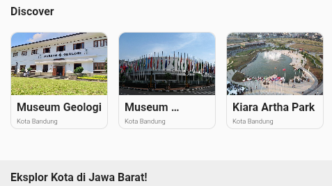
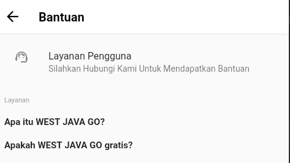
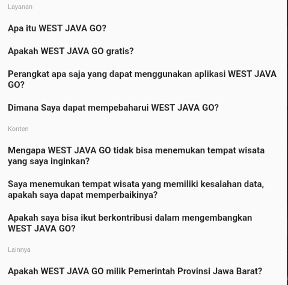

Hi Travellers! West Java GO PROJECT Team merilis versi terbaru aplikasi ke versi 1.0.5.
-> Untuk yang sebelumnya sudah mengunduh Versi 1.0.1, silahkan langsung Unduh tanpa perlu menghapus terlebih dahulu!
-> Untuk pengguna baru, disarankan langsung mengunduh versi 1.0.5!
-> UI Homepage yang baru!
-> Menambahkan Layanan Pengguna, ini dapat diakses di Pengaturan > Bantuan > Layanan Pengguna.
-> Menambahkan 5 Spot Wisata.
-> Menambahkan FAQ, ini bisa diakses di Pengaturan > Bantuan. Atau dapat diakses pula melalui Frequently Asked Question pada Homepage pojok bawah.
-> Merubah isi pemberitahuan yang awalnya merupakan bagian dari Homepage ke bagian tersendiri.
-> Memperbaiki kotak abu-abu yang berada di bagian bawah Homepage.
-> Memperbaiki isi pemberitahuan yang terduplikasi.
-> Memperbaiki beberapa teks yang melewati garis/batas sebuah kotak.
-> Memperbaiki pada beberapa perangkat yang tidak bisa membuka aplikasi ini.
-> Fitur ganti Bahasa pada Pengaturan tidak bisa diklik(Ini dikarenakan ditur Bahasa selain Indonesia masih dalam pengembangan).
-> Tombol Back di halaman list temapt wisata satu kota masih ber"klamufase".
-> Gambar di masing-masing isi Pemberitahuan masih berupa foto Gedung Sate.
-> Terdapat Halaman yang ketika ditekan menampilkan Halaman tidak ada.
-> Pada beberapa perangkat, mengalami loading cukup lama saat membuka beberapa tempat wisata.